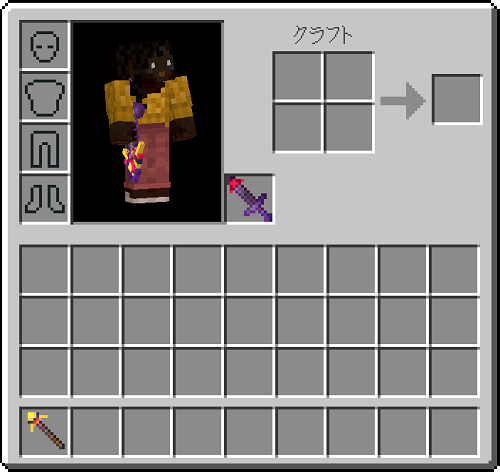
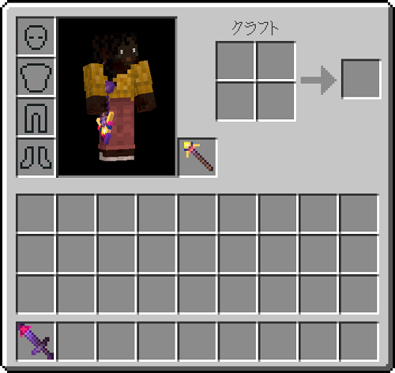
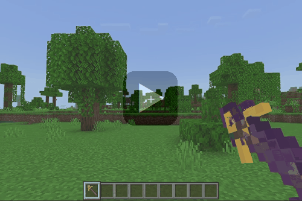
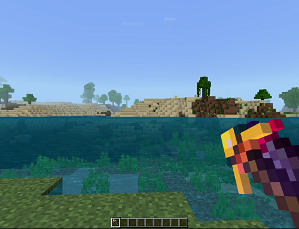
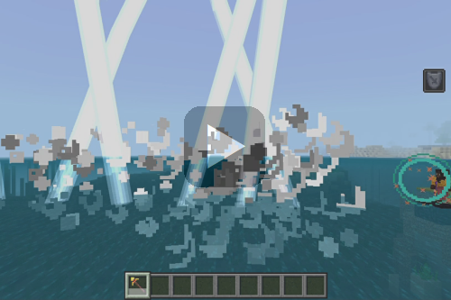
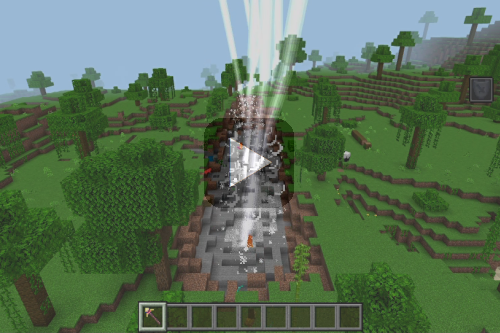
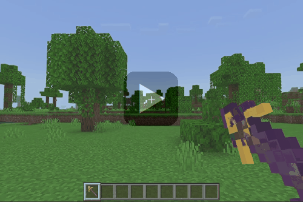
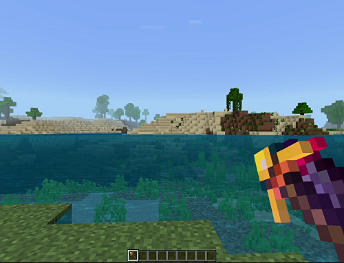
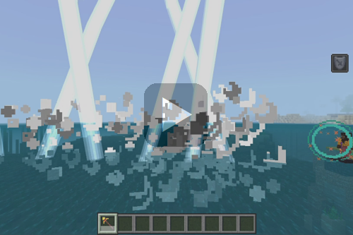
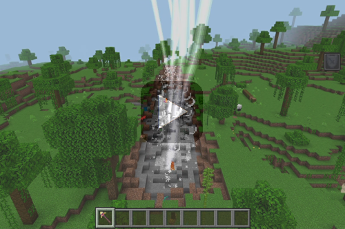

【融合可能アイテム】
はじめに
ここでは本環境で実装している▶いかずちの杖と▶はかいのつるぎを融合した状態で使う方法をご紹介します。
融合と言っても新しいアイテムを生成するものではありません。
それぞれのアイテムをメインハンドとオフハンドに持たせる事によって、装備している間だけ融合させる事ができるようにしてみました。
融合と言っても新しいアイテムを生成するものではありません。
それぞれのアイテムをメインハンドとオフハンドに持たせる事によって、装備している間だけ融合させる事ができるようにしてみました。
外観の融合
▶いかずちの杖と▶はかいのつるぎのそれぞれのアイテムを、メインハンド／オフハンドのどちらに持たせてもアイテムが重なって見えるようにジオメトリを多少調整しています。
おそらく重なっているせいだとは思いますが、表面が電波障害にあっているようなノイズのように見えますが、それはそれでエネルギーを充填しているようにも見えるので、ある意味エフェクトだと思っていますｗ
以下はメインハンドに持たせるアイテム別のインベントリイメージです。
おそらく重なっているせいだとは思いますが、表面が電波障害にあっているようなノイズのように見えますが、それはそれでエネルギーを充填しているようにも見えるので、ある意味エフェクトだと思っていますｗ
以下はメインハンドに持たせるアイテム別のインベントリイメージです。
メインハンドが「いかずちの杖」
メインハンドが「はかいのつるぎ」
発射する攻撃の融合
メインハンドにどちらのアイテムを持たせていても攻撃の内容は同じです。
以下の画面で▶いかずちの杖の落雷と▶はかいのつるぎの爆撃が同時に発動しているのがわかると思います。
▼一人称

ちなみに一人称の画面ではウインドウの幅に応じて見え方が異なる事があります。
例えば以下のようにアイテムスロットが小さくなるほど幅を狭くすると、アイテム同士が分離して隣り合わせたような見た目になります。

▼横から見た場合

▼上から見下ろした場合

実装は至ってシンプルです。
▶いかずちの杖と▶はかいのつるぎのアイテムには元々お互いの処理を実装していて、メインハンド／オフハンド共に今回の２つのアイテムで埋まっている場合には、どちらの処理も同時に走らせています。
以下の画面で▶いかずちの杖の落雷と▶はかいのつるぎの爆撃が同時に発動しているのがわかると思います。
▼一人称

ちなみに一人称の画面ではウインドウの幅に応じて見え方が異なる事があります。
例えば以下のようにアイテムスロットが小さくなるほど幅を狭くすると、アイテム同士が分離して隣り合わせたような見た目になります。

▼横から見た場合

▼上から見下ろした場合

実装は至ってシンプルです。
▶いかずちの杖と▶はかいのつるぎのアイテムには元々お互いの処理を実装していて、メインハンド／オフハンド共に今回の２つのアイテムで埋まっている場合には、どちらの処理も同時に走らせています。
おわりに
オフハンドの装備を外せば、メインハンドに装備しているアイテムは元通り使えます。
今回のように融合させた使い方でも▶召雷の魔石の▶エンティティプロパティの実装時と同じように▶ネットショップに接続中は攻撃が発動しないようにしています。
また、▶はかいのつるぎの実装時と同様に丸腰状態で使うとかなりのダメージを受ける事になるので、発射から数秒間の間は無敵状態にしています。
今回のように融合させた使い方でも▶召雷の魔石の▶エンティティプロパティの実装時と同じように▶ネットショップに接続中は攻撃が発動しないようにしています。
また、▶はかいのつるぎの実装時と同様に丸腰状態で使うとかなりのダメージを受ける事になるので、発射から数秒間の間は無敵状態にしています。